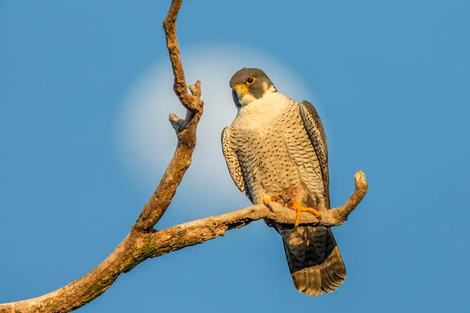

Falcon
Birds
Falcons are birds of prey in the genus Falco, which includes about 40 species. Falcons are widely distributed on all continents of the world except Antarctica, though closely-related raptors did occur there in the Eocene.
Speed: Peregrine falcon: 390 km/h
Family: Falconidae
Scientific name: Falco
Class: Aves
Mass: Peregrine falcon: 0.7 – 1.5 kg, Common kestrel: 180 g,
Length: Peregrine falcon: 34 – 58 cm,
Falcon, any of nearly 60 species of hawks of the family Falconidae (order Falconiformes), diurnal birds of prey characterized by long, pointed wings and swift, powerful flight.
The name is applied in a restricted sense, as true falcons, to the genus Falco, which numbers more than 35 species. Falcons occur virtually worldwide.
They range in size from about 15 cm (6 inches) long in the falconets (Microhierax) to about 60 cm (24 inches) in the gyrfalcon, an Arctic species.
In true falcons the female is the larger and bolder of the sexes and is preferred for the sport of falconry. Falcons have plumes called “flags” on their legs and a notch in the beak that is well developed in the genus Falco to form a “tooth.”
Falcons commonly nest in holes in trees or on natural ledges on cliffs. The eggs are usually four or five in number and buffy white in colour, speckled and blotched with reddish brown. The incubation period is about 28 or 35 days, and the young are cared for in the nest for as long as 35 days.
The flight of falcons is fast and direct with the wings rapidly digging through the air. Some falcons habitually hover while scanning the ground for prey. Some species capture birds of their own size or smaller in midair. Others live mainly on hares, mice, lizards, and insects.
The bat falcon (F. albigularis) of Mexico and Central and South America is a little bird with a dark back, white throat, barred black-and-white breast, and reddish belly. It preys upon birds.
The forest falcon (Micrastur semitorquatus) of tropical America hunts birds and reptiles in the jungles. The laughing falcon (Herpetotheres cachinnans) of the wooded lowlands of Central and South America is a noisy brown bird that eats snakes. The prairie falcon (F. mexicanus), a desert falcon, inhabits canyon and scrub country in western North America.
Biology of Falcon
Systematics and evolution
Compared to other birds of prey, the fossil record of the falcons is not well distributed in time. The oldest fossils tentatively assigned to this genus are from the Late Miocene, less than 10 million years ago.
[citation needed] This coincides with a period in which many modern genera of birds became recognizable in the fossil record. The falcon lineage may, however, be somewhat older than this,
[citation needed] and given the distribution of fossil and living Falco taxa, is probably of North American, African, or possibly Middle Eastern or European origin. Falcons are not closely related to other birds of prey, and their nearest relatives are parrots and songbirds.
Overview
Falcons are roughly divisible into three or four groups. The first contains the kestrels (probably excepting the American kestrel); usually small and stocky falcons of mainly brown upperside color and sometimes sexually dimorphic.
three African species that are generally gray in color stand apart from the typical members of this group. Kestrels feed chiefly on terrestrial vertebrates and invertebrates of appropriate size, such as rodents, reptiles, or insects.
The second group contains slightly larger (on average) species, the hobbies and relatives. These birds are characterized by considerable amounts of dark slate-gray in their plumage; their malar areas are nearly always black. They feed mainly on smaller birds.
Third are the peregrine falcon and its relatives, variably sized powerful birds that also have a black malar area (except some very light color morphs), and often a black cap, as well.
Otherwise, they are somewhat intermediate between the other groups, being chiefly medium gray with some lighter or brownish colors on their upper sides. They are, on average, more delicately patterned than the hobbies and, if the hierofalcons are excluded (see below), this group typically contains species with horizontal barring on their undersides.